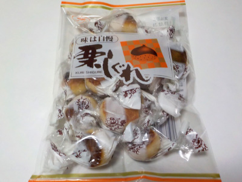

鈴木製菓の栗しぐれ
2023/01/13

白あんに栗ペーストが入った栗しぐれです。ホクホクっとしていて栗っぽい感じがしました。
小さい栗しぐれが沢山入っています。これくらいの大きさだと一口で食べれていいですね。白あんが詰まってて甘いんですが、このサイズだと軽い感じで食べれました。2個目、3個目と手が伸びる美味しさでした。
山梨県甲府市下曽根町3400-1
2023/01/13

白あんに栗ペーストが入った栗しぐれです。ホクホクっとしていて栗っぽい感じがしました。
小さい栗しぐれが沢山入っています。これくらいの大きさだと一口で食べれていいですね。白あんが詰まってて甘いんですが、このサイズだと軽い感じで食べれました。2個目、3個目と手が伸びる美味しさでした。